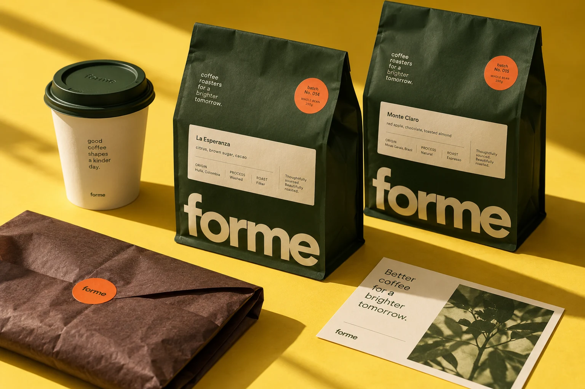

22:18
Делаем идеи
видимыми.
Находим характер бренда.
Придаем ему форму на бумаге,
на экране и в жизни.
Digital
Редакционный дизайн
Избранное


Избранные концепции и независимые исследования студии.
Хороший дизайн
начинается
с внимания.
Независимая студия на пересечении стратегии, графики и цифрового опыта.
Вникаем в контекст. Задаем вопросы. Убираем лишнее. Ищем решение, в котором идея и форма говорят на одном языке.
Ведем проект от первой мысли до последнего макета.
Что мы делаем
Айдентика и брендинг
Визуальный язык, который держит все вместе: от логотипа до упаковки. Собираем систему, с которой удобно работать и легко расти.
- Стратегия и позиционирование
- Визуальная идентичность
- Упаковка и гайдлайны
Цифровой дизайн
Сайты и интерфейсы с ясной структурой и собственным характером. Продумываем путь человека и то, как бренд ведет себя на экране.
- Сайты и лендинги
- UX и UI-дизайн
- Интерактивные прототипы
Графика и издания
Изображения и печатные вещи, которые хочется рассматривать. Работаем с ритмом, материалом и отношениями между текстом и изображением.
- Постеры и иллюстрации
- Книги и журналы
- Кампании и арт-дирекшн
От вопроса к форме
Погружаемся в задачу Находим идею Собираем систему Доводим до деталей
Что у вас
на уме?
Новый бренд, сайт или идея,
которой пока не хватает формы.